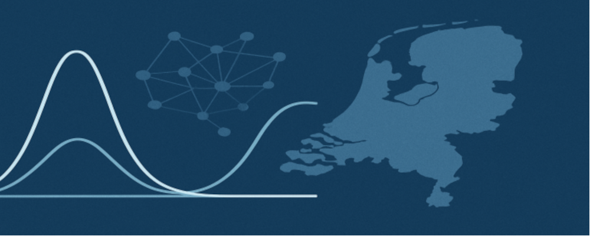

Special Activity Group on Uncertainty Quantification
What is the SAG-UQ?
Are you interested in the exciting field of Uncertainty Quantification? Would you like to share your research in a
framework with other mathematicians, engineers and your colleagues from the Uncertainty Quantification community?
Then, join us and become a member of our Special Activity Group: Uncertainty Quantification: from modeling to simulation.
The goal of the Special Activity Group "Uncertainty Quantification: from modeling to simulation” is to establish
a community of UQ inside the Netherlands and advance the field by providing a research platform.
What is Uncertainty Quantification (UQ) about?
To quantify and, most importantly, reduce uncertainty, the field of Uncertainty Quantification (UQ) has been developed over decades.
It includes sensitivity analysis, forward uncertainty propagation, calibration, parameter and state estimation, data assimilation,
and control problems, and addresses important societal topics (climate, health, reliable energy supply and many more).
Core Organizers
Funding
The SAG-UQ greatly acknowledges funding by the NDNS+ cluster under grant agreement NDNS/2025.004.